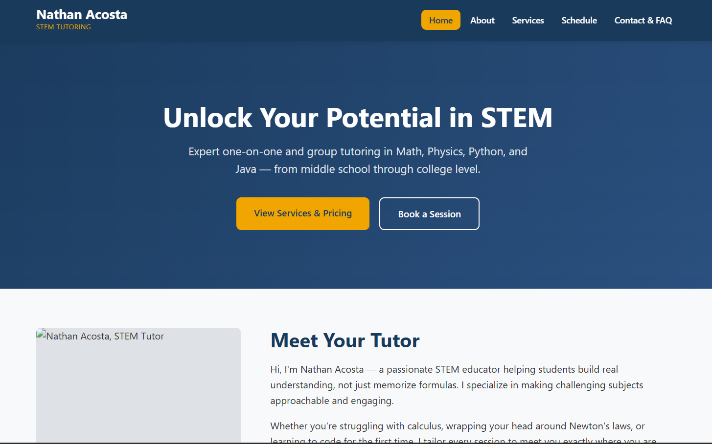

Peer Review 2
Bland, Tyler

Evaluation
- Good: The project is a complete multi-page client website, with clear navigation to Home, About, Services, Schedule, and Contact & FAQ pages.
- Good: The homepage immediately communicates the client purpose with strong branding for “Nathan Acosta STEM Tutoring,” a clear headline, and visible calls to action.
- Good: The About page adds meaningful client background, teaching philosophy, testimonials, and social media links, which makes the site feel complete and professional.
- Good: The Services page is well developed, with subject-specific tutoring descriptions, pricing, and package information.
- Good: The Contact & FAQ page includes a contact form, direct email and phone information, location details, and a useful FAQ section.
- Good: The footer is consistent across pages and includes navigation, contact details, and HTML/CSS validation links.
- Needs Improvement: The Schedule page references a booking calendar, but that feature should be double-checked carefully to make sure it loads and works correctly for all users.
- Needs Improvement: The contact form is present, but the full form submission behavior and validation should be tested to confirm everything works smoothly.
- Needs Improvement: The services pricing/package section should be checked for readability and responsiveness on smaller screens so the information stays easy to follow.
- Needs Improvement: It would help to verify that all validation links truly pass, since the links are visible but the live validation results were not confirmed in this review.
- Suggestion: Test the schedule/calendar feature on both desktop and mobile to make sure the booking experience is reliable.
- Suggestion: Test the contact form fields, required inputs, and submission flow so users do not run into dead ends.
- Suggestion: Review the pricing/package presentation on smaller screens to make sure the section remains clean and readable.
- Suggestion: Keep the strong branding and professional structure, since this is already one of the more complete and polished client projects.
Checklist Summary
- Partial: Unable to find any link from the landing page. But, clear client identity and site purpose are established right away.
- Pass: Multiple pages are present and connected through a consistent navigation menu.
- Pass: The site includes substantial content on the homepage, about page, services page, schedule page, and contact/FAQ page.
- Pass: Footer content is consistent and includes contact information plus validation links.
- Pass: The project appears much more complete and client-focused than a placeholder or rough draft site.
- Partial: Scheduling/calendar functionality is referenced, but should be tested to fully confirm that it works.
- Partial: Contact form functionality is visible, but form behavior and validation still need live testing.
- Partial: Validation links are present, but actual pass results were not confirmed during this review.